Inspiration
I've been a huge Formula One fan for 12 years, and the driver I supported throughout all this time is retiring at the end of this season. Therefore, I decided to make a box as a tribute to him. This box has an F1 car engraved on the both sides, with his car number 5 on them. I have his name engraved on the front, and the dates of his first and (supposedly) last F1 race engraved on the back. Here is how it turned out! The five pieces form the box tightly, and even though there are still a few things to improve on, I'm fairly happy with the result!
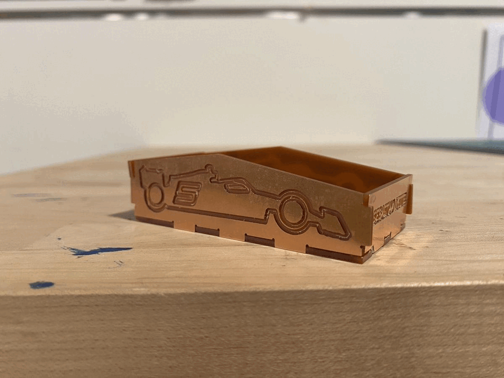The Process
The workflow is basically Adobe Illustrator -> Rhino -> KiCAD -> Bantam -> Milling with the Othermill!
I had the idea in my head, so I started to look for a 2022 F1 car outline that is clean and good for engraving on a 10cm x 7cm FR1 board. I found the source from here with CC0 license.
With Adobe Illustrator, I extrated the outline and added some details to it, including a number 5 on the side of the car representing my favorite driver. To engrave the texts, I searched to see what kind of fonts are best for milling. As the serif fonts are typically narrower and may be too small to mill, the sans-serif fonts are recommended to use for milling. I chose to go with Century Gothic Bold, but read that Arial and Verdana are also common options.
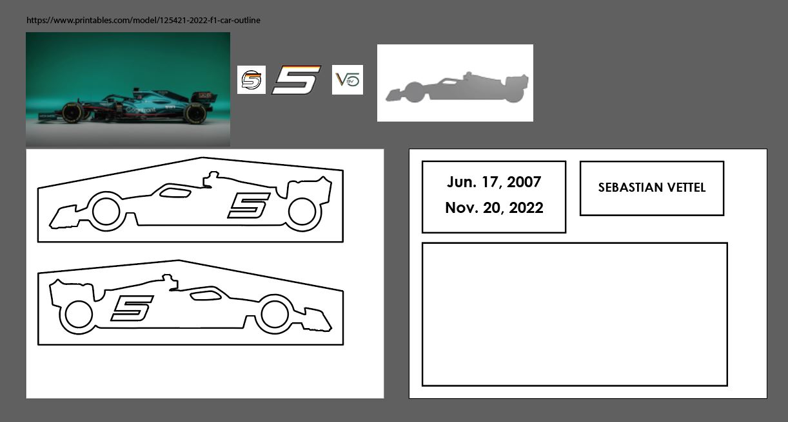I then imported the AI file into Rhino to create the dogbones. What I did was nothing fancy - the same old, easy Trim & Join! Although I would really like to find some time to create them in Grasshopper and save me all the pain of adjusting them later.
In Rhino, I created the shape of each connecting parts using rectangles (10mm x 3mm, with the actual width being 2mm and that extra 1mm was used for trimming as I needed the overlap to trim) and circles (0.5mm radius) for the dogbones. You can see from the below picture that I created the basic shape of the connecting parts, and then used the basic shape to do Trim/Join with each pieces of the box.
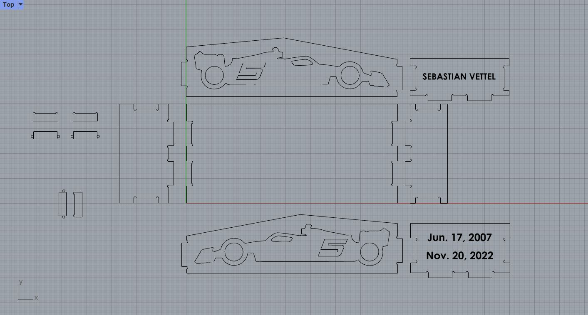This is a sketch of the spec of my connecting parts. The extended parts that should fit into the slots of another pieces were set to 10mm * 95% in length, it turned out to be too loose and I had to shrink the slots to 10mm * 98% for them to fit tightly.
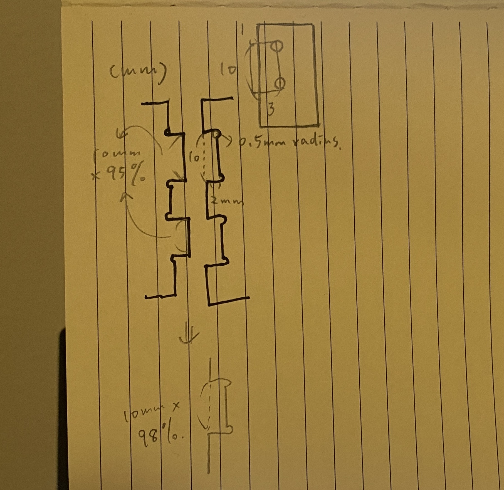In Rhino, I separated the engraving parts, the cut parts, and the reference lines into three layers for better management. And then they were exported into .dxf files (in the Top view, with the Export Scheme being "2007 Lines") with the cutting and engraving curve separated into two files as well as with each board separated.
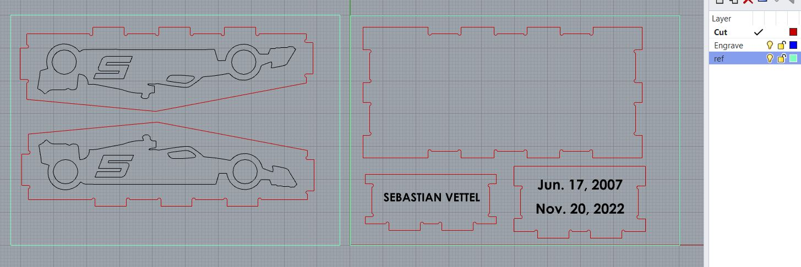Moving on to KiCAD. I imported the cutting curve onto the Edge.Cuts layer, and the engraving curve onto the User.Drawings layer. In Import > Graphics, I set the line width to 0.1mm for cuts, and 0.05mm for engravings (although later it turned out that the end mill I used was 1/32 inch, which was about 0.08mm).
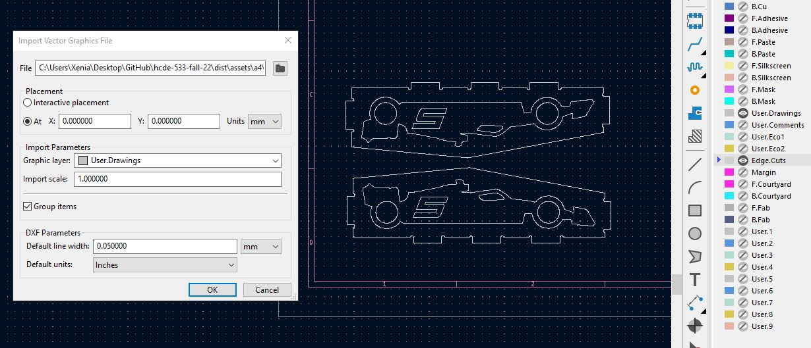Finally, I plotted them into .gbr files, and they were ready to go!
Milling!
Using Bantam Tools, I previewed to see if the curves look correct before heading to the makerspace.
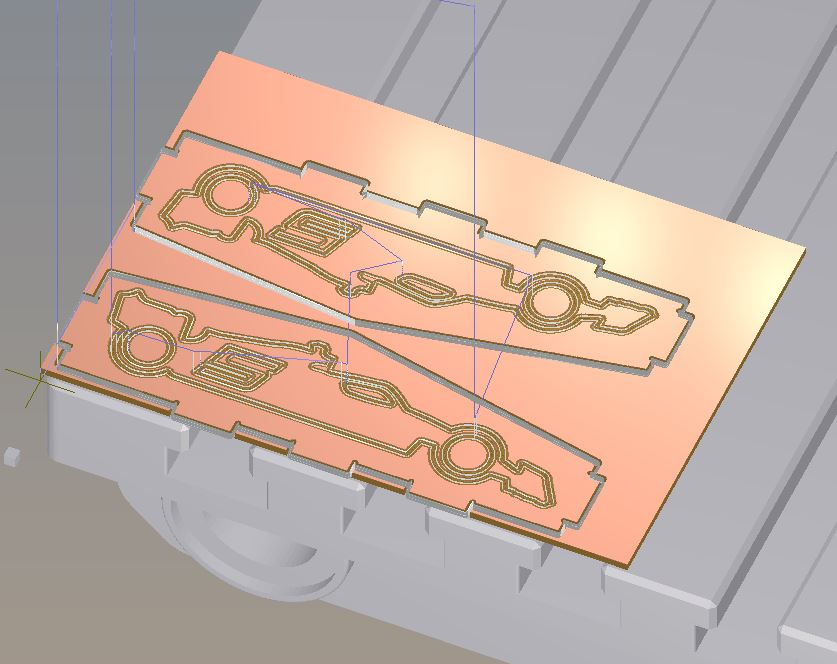Here are a simple step-by-step of using Bantam Tools to do CNC milling with the Othermill machine:
1. Put on the 1/32" end mill. On Bantam, use Jog > Install Tool to let the end mill touch the bed to adjust for the z axis, and then use Jog > Re-home to adjust the x & y axis to 0.
2. In Initial Setup, open the engraving file (Top) first and then the cutting file (Outline). Set the milling tools.
3. In Material Setup, set the sizes of the FR1 board. And then in the material offset z, input the offset which is the total thickness of the sandwich (material layer + double-sided tape + sacrifical layer) minus the material thickness.
4. In Plan Setup > Plan Offset, adjust X & Y slightly to make them less closer to the edge of the board.
5. Tape the sandwich onto the bed, at the bottom left corner.
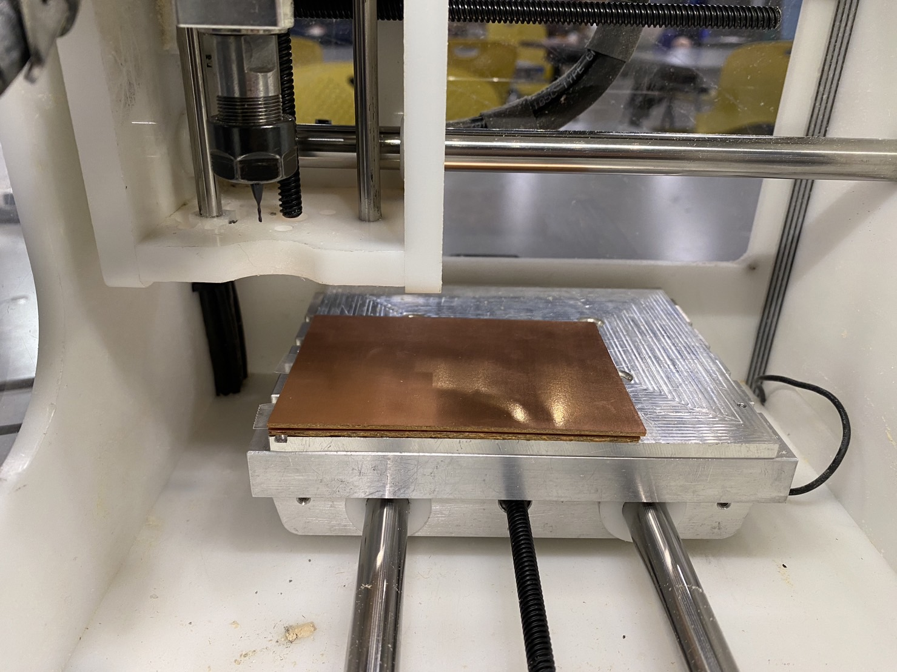6. Click "Mill All" to start milling!
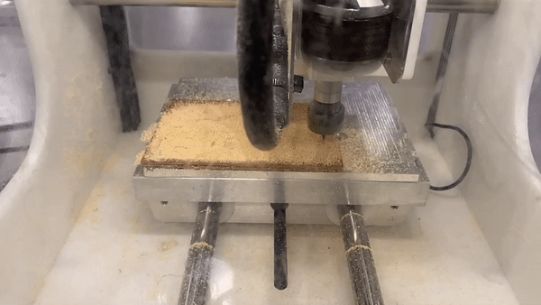Keep an eye on it during the process, as it's possible that the sandwich loses its adherence to the bed and starts moving around... The tip to make it stick to the bed the entire time is to make sure you've removed all of the old/remaining tapes and put on new double-sided tape without any overlap (to make sure it sticks to the bed completely flat) and covering the entire surface.
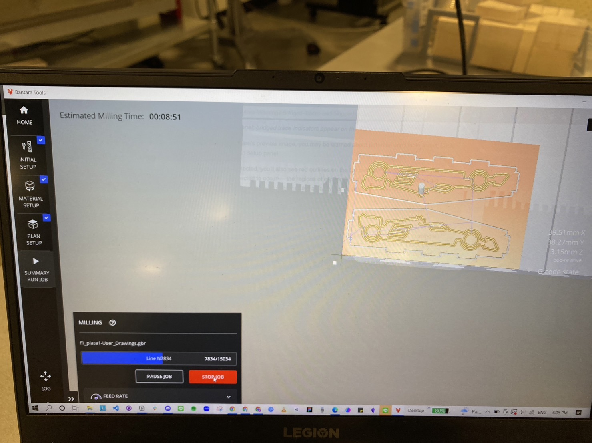 The estimated time for this board was over 8 minutes 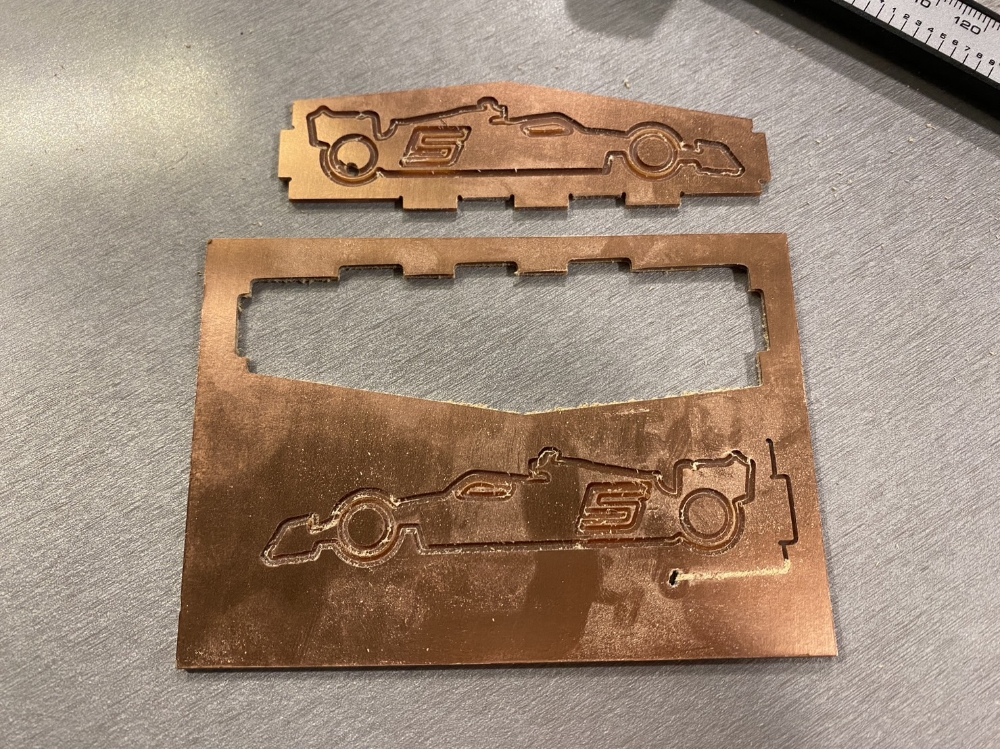 It ended up not adhering to the bed and it was a failed attempt...It didn't fit for my first try...
It was really close, but it was still too loose for my first try. I adjusted the slots to reduce them from 10mm to 10mm * 98%, and with a little bit of chipping on some of them, the pieces fit tightly.
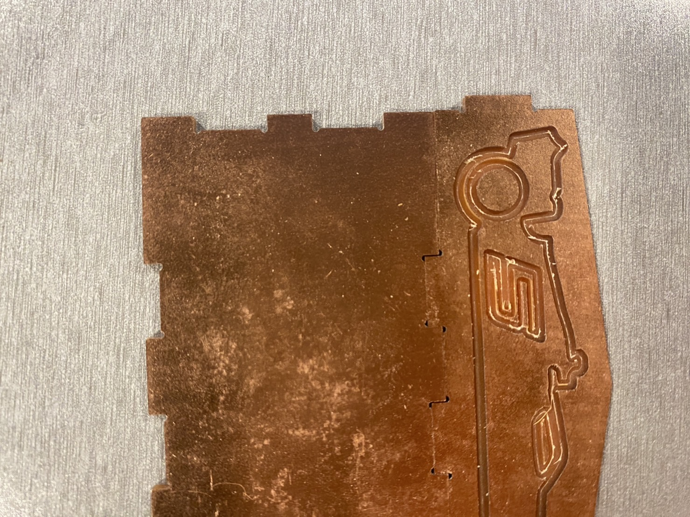 THIS WAS TOO LOOSE!Also, I forgot to take into the account the space for some of the connecting parts, and the parts that touched on three sides ended up not fitting together. I had to manually chop away the bottom parts which was honestly a low-tech not-so-quick fix.
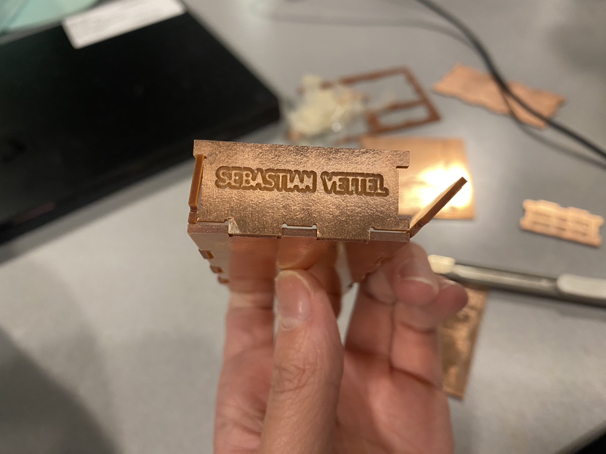 On the bottom left is how it looks like after fixing, on the bottom right is how it looks like before fixing.Lesson-learnt: Test build the box in Rhino! Don't skip the step!
But eventually it all worked out!
There are still things to improve. I'd like to see if I can switch to a smaller mill end next time to make the engravings look better, as some of the curves were actually overlapping each other. The slots didn't fit for my first try as I forgot to take into account the size of the mill end, it's tricky to get right but hopefully I can get it right next time.
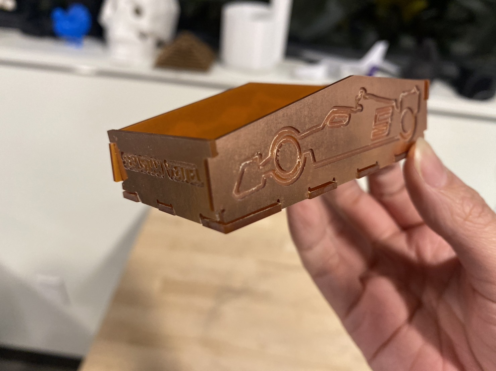Notes
Since I used a more manual way of creating the connecting parts & the dogbones, this had led to some problems in Rhino and costed me quite some time to fix them.
Mainly I was making sure that the curves are all in one closed curve, and not several open curves, as well as removing some overlapping curves.
Attachment
The Adobe Illustrator file, Rhino source file, .dxl files and .gbr files can be found here.
Acknowledgements
Thank you to Nadya and Jun-Chao the TA who demonstrated the milling process! Also thanks to Jalia who was immediately trying to mill a square after class, by watching her doing it I quickly understood the whole process, which was super helpful!